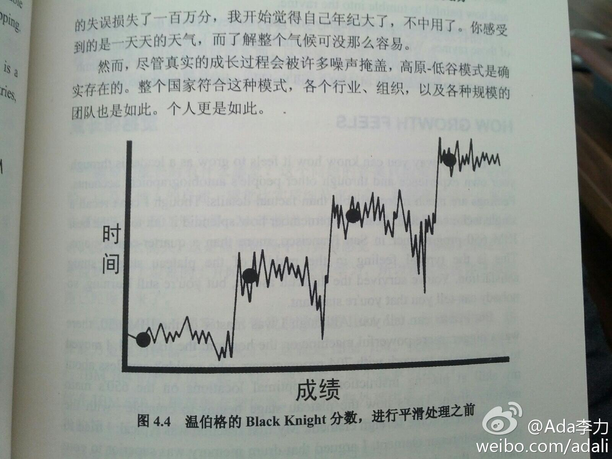

留个参考。不过，统一都称叔叔阿姨也挺好，过去的宗谱把父系母系分得太清楚。对我来说，我不觉得舅舅和伯伯有什么区别，舅舅倒还更亲些。对下一辈儿，也没觉得弟弟的孩子和妹妹的孩子有什么亲疏之分。

Ada李力
2013-02-12

Ada李力
2013-02-12
姣姣认为钱能买到一切。为说明有些东西钱买不到，我说：“要是妈妈为了赚钱整日在外出差，你天天见不到妈妈，没机会一起吃饭，也没时间说话，你想要这样的妈妈吗？”。姣姣低声说：“不想”，她忽然转向明俊：“爸爸，你想要这样的老婆吗？”。
Ada李力
2013-02-12
“技术领导之路”这本书中说，人技能的提高，不是线性增长，也不是阶段式跨越，而是下面这张图。有跨越，有高峰，有低谷，有平台期，而且一直有噪音干扰。
- 